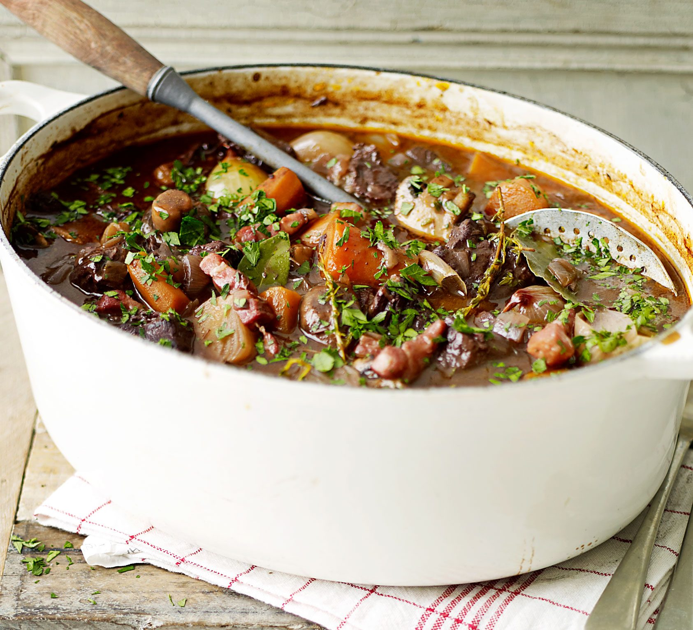

Grandma's Carrot cake

Description
We're obsessed with this easy slow cooker breakfast recipe. Layer the ingredients overnight and wake to savory, breakfast perfection.
Ingredients
- 12 large eggs
- 1 cup heavy cream (or half-and-half)
- 1 teaspoon onion powder
- 1 teaspoon salt
- ½ teaspoon black pepper
- ¼ teaspoon crushed red pepper flakes
- 1 (20 ounce) package refrigerated hash brown potatoes
- 4 ounces shredded Parmesan cheese, divided
- 8 ounces shredded mozzarella cheese, divided
- 1 (5 ounce) package Jones Dairy Farm All Natural Golden Brown® Mild Sausage Links, sliced into coins
- ½ cup chopped sun-dried tomatoes, divided
- ½ cup chopped fresh basil, divided
Steps
- Spray slow cooker with non-stick cooking spray.
- In medium bowl combine eggs and cream; whisk until well combined. Sprinkle onion powder, salt and both peppers over egg mixture while whisking. Whisk until completely combined. Set aside.
- In slow cooker, combine hash browns and about 1/2 of each of Parmesan cheese, mozzarella cheese, sausage, sun-dried tomatoes and basil. Using fingers, gently toss until combined. Pour egg mixture over top; if necessary use spatula to smooth out top.
- Set aside about 1/2 of remaining mozzarella cheese (approximately 2 ounces). Sprinkle remaining ingredients over top of casserole. Cover slow cooker and cook for 6-8 hours on low or until center is cooked through. A thermometer inserted into center should read 160 degrees F.
- Sprinkle casserole with remaining cheese, serve and enjoy!